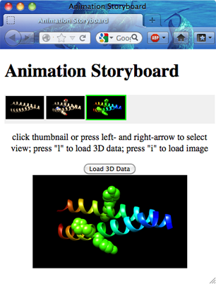
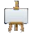

The Animation tool allows saving and restoring scenes in Chimera, placing scenes along a timeline, and recording a movie of the resulting animation. See also: Movie Recorder, Demos, Rapid Access, Chimera sessions, making movies
** Not all aspects of Chimera are included in scenes and/or handled correctly in Animation transitions (see limitations). **
There are several ways to start Animation, a tool in the Utilities category. Clicking Preferences opens the Animation preferences. Close dismisses the Animation dialog, and Help opens this manual page in a browser window.
A Chimera scene includes:
Scenes do not include all aspects of Chimera. Scenes increase session file size.
Clicking the plus icon  in the
Scenes section of the the Animation dialog
saves the current state of Chimera as a scene and generates a thumbnail image
to represent it. Clicking the thumbnail restores the corresponding scene.
Scenes can also be saved and restored with
the scene command, or
restored from Rapid Access.
in the
Scenes section of the the Animation dialog
saves the current state of Chimera as a scene and generates a thumbnail image
to represent it. Clicking the thumbnail restores the corresponding scene.
Scenes can also be saved and restored with
the scene command, or
restored from Rapid Access.
Right-clicking a scene thumbnail raises a context menu with the options:
Clicking a scene thumbnail not only restores the scene in Chimera but also chooses the scene (highlights the thumbnail) in the dialog. Multiple scenes in a contiguous block can be chosen by clicking the first (or last) thumbnail in the block and then Shift-clicking on the last (or first) thumbnail. Ctrl-click toggles the state of a single scene. The chosen scene(s) can be collectively:
A keyframe is simply a scene in the context of a timeline. Each keyframe is associated with a preceding transition of one or more display frames. The timeline may also contain actions, or operations in Chimera other than transitions between keyframes.
In Animation,
a scene or an action
can be inserted into the Timeline by drag-and-drop,
or a scene can be appended with Add to timeline in its
right-click menu.
One or more chosen scenes
(or similarly, an action chosen by clicking its thumbnail)
can be appended to the timeline by clicking
the plus icon  above the timeline.
above the timeline.
Keyframes and actions can be repositioned along the timeline by:
The timeline contents can be played back to preview the movie that would result from recording.
Right-clicking a keyframe or action thumbnail raises a context menu with the options:
Properties that change continuously include: model orientations and scale; clipping plane positions; colors and display states (faded in/out with transparency) of atoms, ribbons, and molecular surfaces; colors, display states, and positions of 2D labels. Discontinuous changes include those in atom/bond styles and volume displays. Transitions between different frames of a trajectory will linearly interpolate the trajectory frame number but use only integer values, thus duplicating or skipping trajectory frames as needed to produce the specified duration.
Clicking a thumbnail in the timeline chooses the keyframe or action (highlights the thumbnail). Multiple keyframes/actions in a contiguous block can be chosen by clicking the first (or last) thumbnail in the block and then Shift-clicking on the last (or first) thumbnail. Ctrl-click toggles the state of a single keyframe or action. The chosen keyframes/actions can be collectively:
In Animation, a red vertical line (the scrubber) indicates playback position on the timeline. Double-clicking a keyframe thumbnail moves the scrubber to that keyframe and restores the corresponding scene in Chimera. Other playback features are provided by clickable icons:
| icon | meaning |
| play animation; switches to a pause icon during playback, and if playback is paused, to a resume-play icon | |
| advance playback by a single display frame | |
 |
toggle looping during playback (brighter icon when on) |
During playback, the target display rate is set to 25 frames per second, to match as closely as possible the speed of the movie that would result from recording with default encoding options (details...).
Clicking the recording icon in the Animation dialog opens a dialog with movie settings. After the necessary inputs have been specified, clicking Record initiates playing and recording the animation (as defined in the timeline) from start to finish. Recording in progress is indicated by a brighter icon, which can be clicked to abort the process; otherwise, the resulting series of images will be encoded into a movie file. Settings:
|  |
Clicking the storyboard icon  in Animation opens a dialog for specifying a directory in which to save storyboard files. The files include index.html, with HTML title as specified in the save dialog, and three files for each scene in the timeline:
Across the top are thumbnails of the keyframes in the order in which they appear in the timeline, with consecutive keyframes that are the same scene collapsed into a single entry. The central panel shows either the static image or the 3D-manipulable WebGL rendering of a scene. Clicking a thumbnail or navigating the series of thumbnails with the keyboard left and right arrows updates the central panel to the static image of the corresponding scene. Pressing the l (letter ell) key or clicking Load 3D Data loads the corresponding WebGL data into the central panel. When WebGL is shown, the corresponding static image can be obtained again by clicking Load Image, or by clicking in the browser window outside of the central panel and then pressing the i key.
Several problems with scenes and/or Animation have been reported, including those related to:
{kind=link}